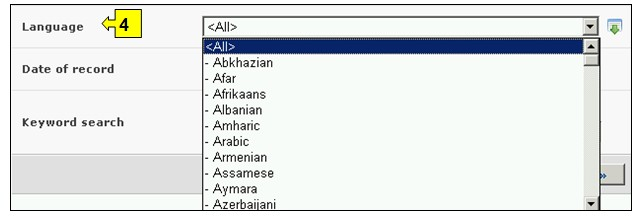
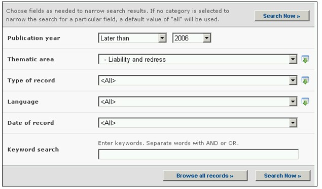

URL: http://bch.cbd.int/database/resources/
El Artículo 20 del Protocolo de Cartagena establece el CIISB para facilitar el intercambio de información y experiencia con OVM entre las Partes, de tal forma que presta asistencia a las mismas en la implementación del Protocolo. Para ayudar a cumplir con esta misión el CIISB contiene información proporcionada por las Partes, gobiernos y organizaciones que es relevante en bioseguridad y en la implementación del Protocolo.
El Centro de Recursos de Información en Bioseguridad (CRIB) contiene catálogos electrónicos de publicaciones relativas a bioseguridad y recursos de información para legisladores, educadores, investigadores y el público en general. Los registros en el CRIB deben ser llevados a cabo por usuarios previamente registrados.
La interfases de búsqueda para el CRIB puede ser realizada en el menú desplegable Búsqueda de Información localizado en la barra de navegación, o en el menú ubicado en la barra izquierda de la página Búsqueda de Información, o en el vínculo del texto Centro de Recursos de Información en Bioseguridad de la misma página.

Figura 82
Estos vínculos facilitan a los usuarios el acceso a catálogos electrónicos de publicaciones relacionadas con bioseguridad y otros recursos de información que incluyen:
1. Recursos gráficos;
2. Documentos de guía para evaluación y gestión de riesgos;
3. Nuevos servicios (incluyendo la lista de correos electrónicos)
4. Publicaciones fuera de serie (monografías);
5. Informes;
6. Series/ publicaciones periódicas;
7. Materiales educativos (manuales, herramientas de ayuda y presentaciones);
8. Páginas Web, referencias en línea o herramientas de búsqueda
En la página del Centro de Recursos de Información en Bioseguridad (CRIB) hay seis cuadros de para referenciar los criterios de búsqueda en la base de datos. Cada uno de estos tiene un menú desplegable en el que se puede seleccionar el criterio de búsqueda. La búsqueda por defecto es el primer elemento que aparece en la lista desplegada. En la parte derecha de cada cuadro, un botón le permite al usuario activar selecciones múltiples. Una vez se está en el modo de selección múltiple, es posible agregar más criterios haciendo clic en el criterio y presionando al mismo tiempo la tecla Ctrl (Control).

Figura 83
Cuadro 1 [Año de publicación] presenta una lista de opciones según la fecha de publicación del artículo. Para seleccionar el año exacto de la(s) publicación(es) el usuario puede usar solamente el cuadro de año. También puede hacer el filtro seleccionando un período de tiempo antes o después del año seleccionado.

Figura 84
Cuadro 2 [Área temática] presenta una lista de las principales áreas temáticas de publicaciones disponibles y permite al usuario limitar la búsqueda a una o más de estas áreas.

Figura 85
Cuadro 3 [Tipo de registro] presenta una lista de los tipos de registros almacenados en el CRIB. Esto permite al usuario limitar la búsqueda a fuentes específicas de información.

Figura 86
Cuadro 4 [Idioma] permite al usuario limitar la búsqueda a documentos en uno o más idiomas.

Figura 87
Cuadro 5 [Fecha del registro] permite al usuario que limite la búsqueda de acuerdo con la fecha en la que el registro ha sido ingresado al CIISB. El menú desplegable proporciona un número de opciones para limitar la búsqueda solamente a aquellos registros que han sido enviados dentro del período de tiempo seleccionado (Ej: ‘último día’, ‘último mes’, ‘último año’, etc.).

Figura 88
Cuadro 6 [Búsqueda por palabras clave] Brinda la oportunidad de utilizar palabras clave para restringir la búsqueda. El usuario puede utilizar la sintaxis estándar de palabras clave (combinación de los operadores Y/O) para buscar con múltiples palabras, o partes de palabras (Ej. “Importación O Exportación”). La búsqueda con palabras clave permite obtener solamente registros que contengan el texto exacto y no sinónimos que no hayan sido insertados (Ej: Una búsqueda con la palabra clave “Maíz” producirá una lista de registros que contienen la palabra “Maíz” pero no los registros que contengan “Zea mays”).

Figura 89
La página de búsqueda ofrece tres botones para obtener la lista de registros. El botón Busque Ahora (Tanto en la parte superior como inferior de la interfase de búsqueda) permite al usuario activar una búsqueda basada en los criterios seleccionados en los cuadros de la tabla de búsqueda. Los resultados de búsqueda son ordenados alfabéticamente, por defecto, de acuerdo con el nombre de país. El botón Busque todos los registros (En la parte inferior de la interfase de búsqueda) permite al usuario obtener una lista de todos los registros en esta base de datos.

Figura 90
Las páginas de Resultados de Búsqueda poseen una ventana de ordenamiento arriba de la lista de los registros encontrados. Esta puede utilizarse para ordenar los registros de acuerdo con criterios específicos para esa categoría de información. Observe que los resultados cambiarán cuando el usuario ajusta los criterios de búsqueda.

Figura 91
Ejemplo. Un usuario desea identificar artículos escritos recientemente acerca asuntos de responsabilidad. El usuario selecciona (i) posterior a y 2006 en el cuadro año de publicación y (ii) Responsabilidad y compensación en el cuadro del área temática. Haciendo clic en el botón Busque Ahora brinda los resultados de la búsqueda. Los resultados se presentan en orden alfabético según los títulos de los artículos.

Figura 92

Figura 93